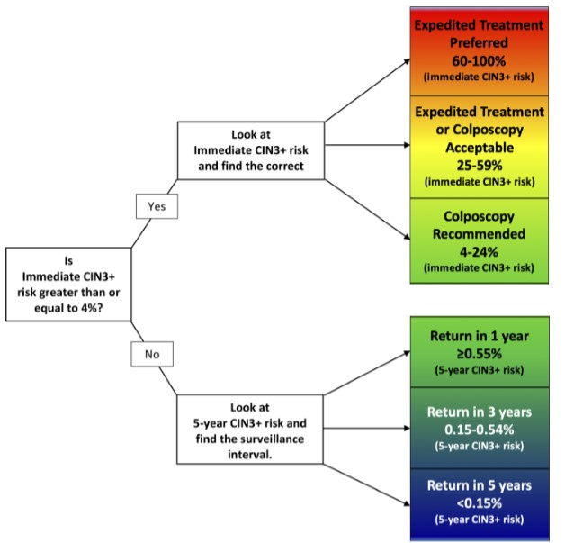
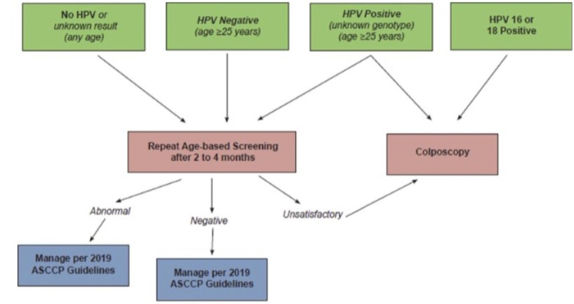
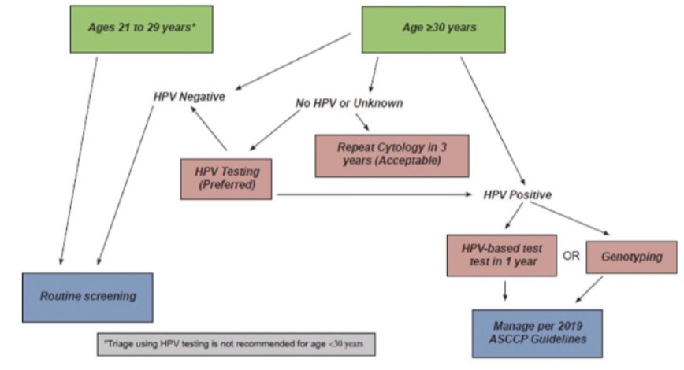
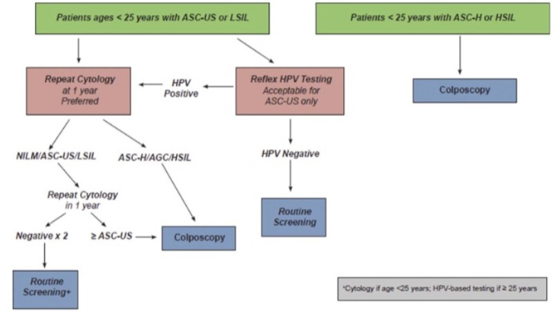

Patient Management
Risk
- Pap Test is a screening test, no screening test is 100% effective
- Requires human interpretation-we make errors
- Conventional Pap test approximately sensitivity is 70%
- Liquid-Based samples sensitivity increases to 94%
- Co-testing, Pap test and HPV sensitivity almost 100%
Risk Assessment Approach to Management
- Recognition of HPV as cause of cervical and anogenital disease
- Pap and HPVhr co-testing is the current recommendation
- Recent recommendation for HPVhr testing as primary mode of screening
- 2012 consensus guidelines for screening uses a risk assessment framework
- Framework is “similar management for similar risk” e.g.
- A case of LSIL and a case of ASCUS on Pap, HPV+ on testing - similar risk for developing squamous cancer
- Risks are calculated/estimated by studies on large populations based on:
- Cytology results
- HPV results
- Co-testing results
Risk Assessment Approach to Management
- The type of risk assessment associated with need for clinical intervention is absolute risk.
- Absolute risk is the size of your risk and serves as a baseline for assessment
- Do something protective, your absolute risk goes down
- Risk assessment examines pretest risk of disease and a posttest risk of disease
- It updates a baseline of testing
- It results in stratification of risk
Risk
- Concern is false-negative test result, missing HSIL, equivalent or more significant lesion
- Sources of Risk:
- Sampling error- lack of expertise - Clinician’s expertise in understanding anatomy, hormonal cycle, and collection devices
- Preparation error-cytoprep is foundation of interpretation
- Locator error-your ability to sit and screen
- i. locator skill-ability to screen and detect abnormal cells
- ii. Interpretation skills-ability to correctly interpret abnormal cells
- Skills must be practiced continuously for competence development and maintenance
Current Pap Test Screening Guidelines from United Services Preventive Services Task Force (USPSTF)
| Population | Screening for Cervical Cancer | Women aged 30 to 65 years | Women younger than 21 years, women older than 65 years with adequate prior screening, and women who have had a hysterectomy |
|---|---|---|---|
| Recommendation | Screen for cervical cancer every 3 years with cytology alone. Grade: A | Screen for cervical cancer every 3 years with cytology alone, every 5 years with hrHPV testing alone, or every 5 years with cotesting. Grade: A | Do not screen for cervical cancer. Grade: D |
| Risk Assessment | All women aged 21 to 65 years are at risk for cervical cancer because of potential exposure to high-risk HPV types (hrHPV) through sexual intercourse and should be screened. Certain risk factors further increase risk for cervical cancer, including HIV infection, a compromised immune system, in utero exposure to diethylstilbestrol, and previous treatment of a high-grade precancerous lesion or cervical cancer. Women with these risk factors should receive individualized follow-up |
|---|---|
| Screening Tests | Screening with cervical cytology alone, primary testing for hrHPV alone, or both at the same time (cotesting) can detect high-grade precancerous cervical lesions and cervical cancer. Clinicians should focus on ensuring that women receive adequate screening, appropriate evaluation of abnormal results, and indicated treatment, regardless of which screening strategy is used. |
| Treatments and Interventions | High-grade cervical lesions may be treated with excisional and ablative therapies. Early-stage cervical cancer may be treated with surgery (hysterectomy) or chemotherapy. |
Three Primary Screening Parameters Available
- Screening with cervical cytology-Pap test alone
- Screening with HPV hr testing alone
- Co-testing using both Pap testing and co-testing
- Evidence shows co-testing is best
Primary HPV Testing, Reflex Cytology
- Patients that are HPV positive for all HPV genotypes, reflex testing to cytology preferred
- If hrHPV positive for HPV 16 and/or 18, can refer to colposcopy directly but prefer cytology reflex testing first
- Roche COBAS is FDA approved for primary HPV testing
- Onclarity by BD is FDA approved for primary testing in patients 25 years and older
American Society of Colposcopic and Cervical Pathology
- Essential Changes From Prior Management Guidelines
- Recommendations are based on risk, not results.
- Recommendations of colposcopy, treatment, or surveillance will be based on a patient’s risk of CIN 3+, determined by a combination of current results and past history (including unknown history). The same current test results may yield different management recommendations depending on the history of recent past test results.
- Each patient’s risk is assessed individually and recommendations are based on individual risk.
- No one size fits all treatment; no longer treating or following up based solely on results

Recommendations Leading to Surveillance
- Surveillance is following up by testing sooner than recommended routine screening guidelines
- Risk is lower than recommended for colposcopy
- Risk of a diagnosis of CIN 3 or greater is less than 4%
- Surveillance testing intervals range from 1 to 2 years
- Risk less than 0.15%-return in 5 years
- Risk between 0.15-0.54% return in 3 years
- Risk greater than or equal to 0.55% return in 1 year
Recommendations Leading to Colposcopy and Treatment
- Risk estimate of diagnosis CIN3 or greater is greater than 4%-colposcopy is performed
- Colposcopy is a procedure where the cervix is examined under high magnification
- Clinicians view the cervix vasculature, ulcers, hyperkeratotic areas
- Biopsies are taken during procedure
- Risk of coloposcopy is over biopsy leading to fertility and other issues
- LEEP, cryosurgery and laser surgery can be performed during colposcopy
- Treatment may occur with out excisional biopsy but colposcopy and biopsy also performed
- Non-pregnant patients 25 years older with 60% risk, treatment, no need to colposcopy
- Non-pregnant patient 25 years or older with risk between 25% and 60%, excisional treatment or colposcopy with biopsy
Other Guidelines


Colposcopy Exceptions
- ASC-H, Colposcopy is recommended whether HPV + or –
- Colposcopy is recommended for patients HPV 18 + but cytology negative
- Colposcopy recommended after two unsatisfactory Pap tests
Cytology-Histology Correlations and Treatments
- Histology is the gold standard and so laboratories gather data on biopsy results associated with Pap and HPV testing
- Cytology-Histology Correlation is part of QA programs
- Lower Anogenital Squamous Terminology (LAST) is now used but CIN remain
- Treatment for patients younger or older than age 25 years
- Nonpregnant patients with biopsy confirmed HSIL
- Excisional treatment-area of tissue or ablation with cryotherapy.
- LEEP is preferred over cryotherapy, along with cone biopsy
- Patients with CIN 1 on biopsy but cytology ASC-H or HSIL, review cytology, biopsy and colposcopic results
- Immediate excision or HPV testing and colposcopy in one year
- Patients with CIN2 more concerned about pregnancy, observation or treatment
- LSIL on histology, observation is preferred for 1 to 2 years
- Biopsy proven AIS, cervical biopsy to rule out invasion
- LEEP can disrupt cervical architecture so a top hat procedure obtaining at least 10 mm tissue preferred, 18 to 20mm tissue if not concerned about future pregnancy
- Hysterectomy is preferred treatment
Patients younger than 25 years-observation or treatment for Bx HSIL
- Patients ages <25 years with ASC-US or LSIL
- Repeat cytology at 1 year preferred
- Reflex HPV testing acceptable for ASC-US only
- If reflex HPV positive -> Repeat cytology at 1 year preferred
- If reflex HPV negative -> Routine screening
- At repeat cytology: NILM/ASC-US/LSIL -> Repeat cytology in 1 year
- After two negative results -> Routine screening
- At repeat cytology: ≥ASC-US -> Colposcopy
- At repeat cytology: ASC-H/AGC/HSIL -> Colposcopy
- Patients <25 years with ASC-H or HSIL -> Colposcopy
- Cytology if age <25 years; HPV-based testing if ≥25 years
- Figure 12

Other Recommendations
- Pregnant patients-recommend using same guidelines for non-pregnant patients
- Unacceptable to perform curettage or biopsy.
- Excisional procedure or biopsy if cancer is suspected
- Biopsy proven HSIL, defer colposcopy until post partum
- Do not treat HSIL during pregnancy
- Colposcopy should be performed at least 4 weeks post partum
- Immunosuppressed patients, colposcopy if HPV + or ASCUS and higher
- Patients treated with hysterectomy, 3 HPV tests then go into long term surveillance
- Patients over 65 years same guidelines as for 25 to 65 yeas
References
- Author. Title of article. Journal Name. Year;Volume(Issue):Pages.
- Author. Title of second article. Journal Name. Year;Volume(Issue):Pages.